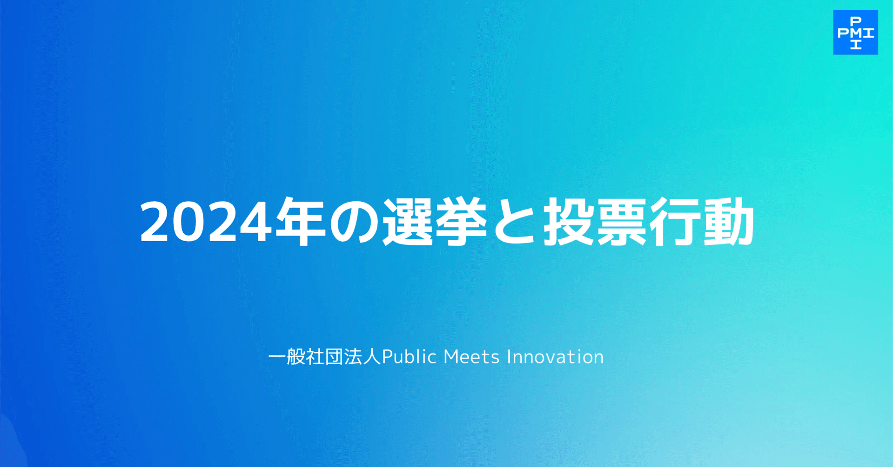

一般社団法人Public Meets Innovation（パブリックミーツイノベーション、以下PMI）（東京都 渋谷区・代表理事 石山アンジュ）は、Z・ミレニアル世代による調査レポート「2024年の選挙と投票行動」を公表します。
はじめに
私たちは今、民主主義の転換点に生きている。
政治や選挙の風景が大きく変化した「選挙イヤー」2024年を経て、この夏には、政治の趨勢を左右する重要な選挙が控えている。
こうした中、Public Meets Innovationでは、今回で2回目となる「政治意識調査」を実施した。政治参加の動機、メディアの影響、制度への信頼などを多角的に分析し、私たち有権者が今、政治とどう向き合っているのか、そして今後どう向き合っていくべきかを明らかにする。
本レポートは、変化の只中にある私たち自身の意識を捉え直し、これからの日本における民主主義の再設計―Democracy 2.0―に向けた議論の出発点となることを目的としている。
エグゼクティブ・サマリー：揺らぐ安定と見通せぬ変化の狭間で
2024年の日本の有権者は、政治への閉塞感と制度への信頼の間で複雑なねじれを見せている。高齢層ほど投票行動は安定し、保守的な志向が強い一方、多くの国民は自らの政治的立場を明確に定置できず、政党の存在感は必ずしも大きくない。一部ターゲットを明確にすることにより新たな層の巻き込みに成功している政党もあるが、性別や年代など、属性によって政治への期待値は大きく異なっているのが実態だ。
一方で、メディア参照度や制度信頼度を見れば、前者では地上波テレビの影響力が全世代を通じて大きく、後者では法律や憲法の信頼度が高いことが伺える。新興メディアなど若年層を中心に新たな情報源が広がってはいるものの、全体的には、私たちはこれまで培ってきた制度的基盤のうえに何とか寄りかかりながら政治と向き合い続けているのである。
このような構造の上に成り立つ有権者の意識は、一見して多様で断片的に見えるものの、実は「変化への慎重な期待」という共通の地平に収れんしている。すなわち、政治に対する強い不満や失望がある一方で、制度自体を根底から否定するほどの急進的な態度には全体として傾いておらず、既存の枠組みの中で「どのように変えていけるか」を模索している。この傾向は、政党支持の流動性や投票時の重視項目、情報源に対する選別的な信頼に明瞭に表れている。
本レポートを通じて浮かび上がってきたのは、動揺しながらもなお安定性を保ち続ける既存の制度的基盤と、それに対峙する急進的な新興勢力との狭間で、模索と逡巡を繰り返す有権者の姿である。
メディアの方へ
データの詳細やメディアでの引用等についてのお問い合わせは以下のアドレスまでご連絡ください。
sm241008アットg.hit-u.ac.jp（アットを＠に変換してお送りください）
担当：上野（PMI ThinkTank）
過去メディア掲載情報はこちらをご確認ください。
https://note.com/pmi/n/nff0f6b296b1e